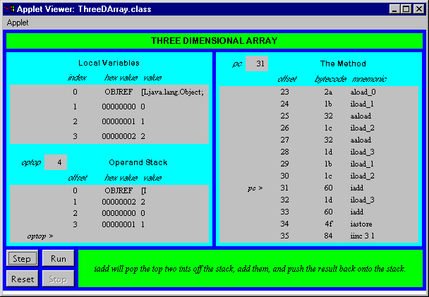

This chapter describes the instructions that create and manipulate objects and arrays inside the Java Virtual Machine. All of these instructions involve the heap. Most of them refer to entries in the constant pool.
Accompanying this chapter on the CD-ROM is an applet that interactively illustrates the material presented in the chapter. The applet, named Three-Dimensional Array, simulates the Java Virtual Machine executing a method that allocates and initializes a three dimensional array. At the end of this chapter, you will find a description of this applet and the bytecodes it executes.
A Refresher on Objects and Arrays
As mentioned in earlier chapters, in the Java Virtual Machine, memory is allocated on the garbage-collected heap only as objects. There is no way to allocate memory for a primitive type on the heap, except as part of an object. If you want to use a primitive type where an Object reference is needed, you can allocate a wrapper object for the type from the java.lang package. For example, there is an Integer class that wraps an int type with an object. Only object references and primitive types can reside on the Java stack as local variables. Objects can never reside on the Java stack.
The architectural separation of objects and primitive types in the Java Virtual Machine is reflected in the Java programming language, in which objects cannot be declared as local variables--only object references and primitive types. Upon declaration, an object reference refers to nothing. Only after the reference has been explicitly initialized --either with a reference to an existing object or with a call to new --does the reference refer to an actual object.
In the Java Virtual Machine instruction set, all objects are instantiated and accessed with the same set of opcodes, except for arrays. As mentioned in earlier chapters, arrays in Java are full-fledged objects. Like any other Java object, arrays are created dynamically. Array references can be used anywhere a reference to type Object is called for, and any method of Object can be invoked on an array. Still, in the Java Virtual Machine, array operations are handled by special bytecodes.
As with any other object, arrays cannot be declared as local variables; only array references can. Array objects themselves always contain either an array of primitive types or an array of object references. If you declare an array of objects, you get an array of object references. The objects themselves must be explicitly created with new and assigned to the elements of the array.
Opcodes for Objects
Instantiation of new objects is accomplished via the new opcode, shown in Table 15-1. Two one-byte operands follow the new opcode. These two bytes are combined to form an unsigned 16-bit index into the constant pool. The constant pool entry at the specified offset gives information about the class of the new object. If it hasn't already, the virtual machine resolves the constant pool entry. It creates a new instance of the object on the heap, initializes the object's instance variables to default initial values, and pushes the reference to the new object onto the stack.
Table 15-1. Object creation
| Opcode | Operand(s) | Description |
new | indexbyte1, indexbyte2 | creates a new object on the heap, pushes reference |
Table 15-2 shows the opcodes that put and get object fields. These opcodes, putfield and getfield, operate only on fields that are instance variables. Static variables are accessed by putstatic and getstatic, which are described later. The putfield and getfield instructions each take two one-byte operands, which are combined to form an unsigned 16-bit index into the constant pool. The constant pool entry at that index contains information about the class, name, and type of the field. If it hasn't already, the virtual machine resolves the constant pool entry. The object reference is taken from the stack in both the putfield and getfield instructions. The putfield instruction takes the instance variable value from the stack, and the getfield instruction pushes the retrieved instance variable value onto the stack.
Table 15-2. Accessing instance variables
| Opcode | Operand(s) | Description |
putfield | indexbyte1, indexbyte2 | set field, indicated by index, of object to value (both taken from stack) |
getfield | indexbyte1, indexbyte2 | pushes field, indicated by index, of object (taken from stack) |
Class variables are accessed via the getstatic and putstatic opcodes, as shown in Table 15-3. Both getstatic and putstatic take two one-byte operands, which are combined by the Java Virtual Machine to form a 16-bit unsigned offset into the constant pool. The constant pool item at that location gives information about one static field of a class. If it hasn't already, the virtual machine resolves the constant pool entry. Because there is no particular object associated with a static field, there is no object reference used by either getstatic or putstatic. The putstatic instruction takes the value to assign from the stack. The getstatic instruction pushes the retrieved value onto the stack.
Table 15-3. Accessing class variables
| Opcode | Operand(s) | Description |
putstatic |
indexbyte1, indexbyte2 | sets static field, indicated by index, to value (taken from stack) |
getstatic |
indexbyte1, indexbyte2 | pushes static field, indicated by index |
The following opcodes check to see whether the object reference on the top of the stack refers to an instance of the class or interface indexed by the operands following the opcode. In both cases, the virtual machine forms an unsigned 16-bit index into the constant pool from the two bytes that follow the opcode. If it hasn't already, the virtual machine resolves the constant pool entry.
The checkcast instruction throws CheckCastException if the object is not an instance of the specified class or interface. Otherwise, checkcast does nothing. The object reference remains on the stack and execution is continued at the next instruction. This instruction ensures that casts are safe at run time and forms part of the Java Virtual Machine's security blanket.
The instanceof instruction, shown in Table 15-4, pops the object reference from the top of the stack and pushes true or false. If the object is indeed an instance of the specified class or interface, then true is pushed onto the stack, otherwise, false is pushed onto the stack. The instanceof instruction is used to implement the instanceof keyword of the Java language, which allows you to test whether an object is an instance of a particular class or interface.
Table 15-4. Type checking
| Opcode | Operand(s) | Description |
checkcast | indexbyte1, indexbyte2 | Throws ClassCastException if objectref on stack cannot be cast to class at index |
instanceof | indexbyte1, indexbyte2 | Pushes true if objectref on stack is an instance of class at index, else pushes false |
Opcodes for Arrays
Instantiation of new arrays is accomplished via the newarray, anewarray, and multianewarray opcodes, shown in Table 15-6. The newarray opcode is used to create arrays of primitive types other than object references. The particular primitive type is specified by a single one-byte operand, the "atype," following the newarray opcode. The newarray instruction can create arrays for byte, short, char, int, long, float, double, or boolean. Table 15-5 shows the legal values for atype and the corresponding array types.
Table 15-5. Values for atype
| Array Type | atype |
T_BOOLEAN | 4 |
T_CHAR | 5 |
T_FLOAT | 6 |
T_DOUBLE | 7 |
T_BYTE | 8 |
T_SHORT | 9 |
T_INT | 10 |
T_LONG | 11 |
Note that the instructions that create arrays is one place in the Java Virtual Machine where boolean values are referred to explicitly. This enables implementations, especially those that must operate under constrained memory requirements, to compress arrays of boolean values into bit maps. In such a representation, each boolean element of an array would be represented by one bit. On implementations that have more memory available, boolean arrays may instead be implemented as arrays of byte s. This representation would likely yield better performance than a bit map approach, though it would consume more memory. No matter what internal implementation a particular virtual machine uses for boolean arrays, the elements of a boolean array are accessed with the same opcodes used to access byte arrays. These opcodes are described later in this chapter.
The anewarray instruction creates an array of object references. Two one-byte operands follow the anewarray opcode and are combined to form an unsigned 16-bit index into the constant pool. A description of the class of object for which the array is to be created is found in the constant pool at the specified index. If it hasn't already, the virtual machine resolves the constant pool entry. This instruction allocates space for the array of object references and initializes the references to null.
The multianewarray instruction is used to allocate multidimensional arrays, which are simply arrays of arrays. A multidimensional array could alternatively be allocated with repeated use of the anewarray and newarray instructions. The multianewarray instruction simply compresses the bytecodes needed to create multidimensional arrays into one instruction. Two one-byte operands follow the multianewarray opcode and are combined to form an unsigned 16-bit index into the constant pool. A description of the class of object for which the array is to be created is found in the constant pool at the specified index. If it hasn't already, the virtual machine resolves the symbolic reference. Immediately following the two one-byte operands that form the constant pool index is an unsigned one-byte operand that specifies the number of dimensions in this multidimensional array. The sizes for each dimension are popped off the stack. This instruction allocates space for all arrays that are needed to implement the multidimensional arrays.
The constant pool entry referred to by a multianewarray instruction contains a Constant_CLASS entry with an array class name. For example, the constant pool entry for a four-dimensional array of float would have the name "[[[[F". The class name in the constant pool entry may have more (but not less) left-brackets than indicated by the dimensions byte. The virtual machine always creates the number of dimensions specified by the dimensions byte.
Table 15-6. Creating new arrays
| Opcode | Operand(s) | Description |
newarray | atype | pops length, allocates new array of primitive types of type indicated by atype, pushes objectref of new array |
anewarray | indexbyte1, indexbyte2 | pops length, allocates a new array of objects of class indicated by indexbyte1 and indexbyte2, pushes objectref of new array |
multianewarray | indexbyte1, indexbyte2, dimensions | pops dimensions number of array lengths, allocates a new multidimensional array of class indicated by indexbyte1 and indexbyte2, pushes objectref of new array |
Table 15-7 shows the arraylength instruction, which pops an array reference off the top of the stack and pushes the length of that array.
Table 15-7. Getting an array length
| Opcode | Operand(s) | Description |
arraylength |
(none) | pops objectref of an array, pushes length of that array |
The opcodes shown in Table 15-8 retrieve an element from an array. The array index and array reference are popped from the stack, and the value at the specified index of the specified array is pushed back onto the stack. The baload opcode converts the byte or boolean value to int by sign extending, then pushes the int. Likewise, the saload opcode converts the short value to int by sign extending, then pushes the int. The caload instruction converts the char to an int by zero-extending, then pushes the int.
Table 15-8. Retrieving an array element
| Opcode | Operand(s) | Description |
baload | (none) | pops index and arrayref of an array of byte s or boolean s, pushes arrayref[index] |
caload | (none) | pops index and arrayref of an array of char s, pushes arrayref[index] |
saload | (none) | pops index and arrayref of an array of short s, pushes arrayref[index] |
iaload | (none) | pops index and arrayref of an array of int s, pushes arrayref[index] |
laload | (none) | pops index and arrayref of an array of long s, pushes arrayref[index] |
faload | (none) | pops index and arrayref of an array of float s, pushes arrayref[index] |
daload | (none) | pops index and arrayref of an array of double s, pushes arrayref[index] |
aaload | (none) | pops index and arrayref of an array of objectrefs, pushes arrayref[index] |
Table 15-9 shows the opcodes that store a value into an array element. The value, index, and array reference are popped from the top of the stack. The bastore instruction just stores the lower eight bits of the popped int value. The sastore and castore instructions just store the lower 16 bits of the popped int value.
Table 15-9. Storing to an array element
| Opcode | Operand(s) | Description |
bastore | (none) | pops value, index, and arrayref of an array of byte s or boolean s, assigns arrayref[index] = value |
castore | (none) | pops value, index, and arrayref of an array of char s, assigns arrayref[index] = value |
sastore | (none) | pops value, index, and arrayref of an array of short s, assigns arrayref[index] = value |
iastore | (none) | pops value, index, and arrayref of an array of int s, assigns arrayref[index] = value |
lastore | (none) | pops value, index, and arrayref of an array of long s, assigns arrayref[index] = value |
fastore | (none) | pops value, index, and arrayref of an array of float s, assigns arrayref[index] = value |
dastore | (none) | pops value, index, and arrayref of an array of double s, assigns arrayref[index] = value |
aastore | (none) | pops value, index, and arrayref of an array of objectrefs, assigns arrayref[index] = value |
Three-Dimensional Array: A Simulation
The Three-Dimensional Array applet, shown in Figure 15-1, demonstrates a Java Virtual Machine executing a sequence of bytecodes. This applet is embedded in a web page on the CD-ROM in file applets/ThreeDArray.html.
The bytecode sequence in the simulation was generated by javac for the initAnArray() method of the class shown below:
begin// On CD-ROM in file opcodes/ex1/ThreeDTree.javaclass ThreeDTree {
static void initAnArray() {
int[][][] threeD = new int[5][4][3];
for (int i = 0; i < 5; ++i) {
for (int j = 0; j < 4; ++j) {
for (int k = 0; k < 3; ++k) {
threeD[i][j][k] = i + j + k;
}
}
}
}
}
end
The bytecodes generated by javac for initAnArray() are shown below:
begin0 iconst_5 // Push constant int 5.1 iconst_4 // Push constant int 4.
2 iconst_3 // Push constant int 3.
3 multianewarray #2 dim #3 <Class [[[I
// Create a new multi-dimensional array using
// constant pool entry #2 as the class (which
// is [[[I, an 3D array of ints) with a
// dimension of 3.
7 astore_0 // Pop object ref into local variable 0:
// int threeD[][][] = new int[5][4][3];
8 iconst_0 // Push constant int 0.
9 istore_1 // Pop int into local variable 1: int i = 0;
10 goto 54 // Go to section of code that tests outer loop.
13 iconst_0 // Push constant int 0.
14 istore_2 // Pop int into local variable 2: int j = 0;
15 goto 46 // Go to section of code that tests middle loop.
18 iconst_0 // Push constant int 0.
19 istore_3 // Pop int into local variable 3: int k = 0;
20 goto 38 // Go to section of code that tests inner loop.
23 aload_0 // Push object ref from local variable 0.
24 iload_1 // Push int from local variable 1 (i).
25 aaload // Pop index and arrayref, push object ref
// at arrayref[index] (gets threeD[i]).
26 iload_2 // Push int from local variable 2 (j).
27 aaload // Pop index and arrayref, push object ref
// at arrayref[index] (gets threeD[i][j]).
28 iload_3 // Push int from local variable 3 (k).
// Now calculate the int that will be assigned
// to threeD[i][j][k]
29 iload_1 // Push int from local variable 1 (i).
30 iload_2 // Push int from local variable 2 (j).
31 iadd // Pop two ints, add them, push int result (i + j).
32 iload_3 // Push int from local variable 3 (k).
33 iadd // Pop two ints, add them, push int
// result (i + j + k).
34 iastore // Pop value, index, and arrayref; assign
// arrayref[index] = value:
// threeD[i][j][k] = i + j + k;
35 iinc 3 1 // Increment by 1 the int in local variable 3: ++k;
38 iload_3 // Push int from local variable 3 (k).
39 iconst_3 // Push constant int 3.
40 if_icmplt 23 // Pop right and left ints, jump if left < right:
// for (...; k < 3;...)
43 iinc 2 1 // Increment by 1 the int in local variable 2: ++j;
46 iload_2 // Push int from local variable 2 (j).
47 iconst_4 // Push constant int 4.
48 if_icmplt 18 // Pop right and left ints, jump if left < right:
// for (...; j < 4;...)
51 iinc 1 1 // Increment by 1 the int in local variable 1: ++i;
54 iload_1 // Push int from local variable 1 (i).
55 iconst_5 // Push constant int 5.
56 if_icmplt 13 // Pop right and left ints, jump if left < right:
// for (...; i < 5;...)
59 return
end
The initAnArray() method merely allocates and initializes a three-dimensional array. This simulation demonstrates how the Java Virtual Machine handles multidimensional arrays. In response to the multianewarray instruction, which in this example requests the allocation of a three-dimensional array, the Java Virtual Machine creates a tree of one-dimensional arrays. The reference returned by the multianewarray instruction refers to the base one-dimensional array in the tree. In the initAnArray() method, the base array has five components -- threeD[0] through threeD[4]. Each component of the base array is itself a reference to a one-dimensional array of four components, accessed by threeD[0][0] through threeD[4][3]. The components of these twenty arrays are also references to arrays, each of which has three components. These components are int s, the elements of this multidimensional array, and they are accessed by threeD[0][0][0] through threeD[4][3][2].
In response to the multianewarray instruction in the initAnArray() method, the Java Virtual Machine creates 1 five-element array of arrays, 5 four-element array of arrays, 20 three-element array of ints. The Java Virtual Machine allocates these 26 arrays on the heap, initializes their components such that they form a tree, and returns the reference to the base array.
To assign an int value to an element of the three-dimensional array, the Java Virtual Machine uses aaload to get a component of the base array. Then the Java Virtual Machine uses aaload again on this component--which is itself an array of arrays--to get a component of the branch array. This component is a reference to a leaf array of ints. Finally the Java Virtual Machine uses iastore to assign an int value to the element of the leaf array. The Java Virtual Machine uses multiple one-dimensional array accesses to accomplish operations on multidimensional arrays.
To drive the Three-Dimensional Array simulation, use the Step, Reset, Run, and Stop buttons. Each time you press the Step button, the simulator will execute the instruction pointed to by the pc register. If you press the Run button, the simulation will continue with no further coaxing on your part until you press the Stop button. To start the simulation over, press the Reset button. For each step of the simulation, a panel at the bottom of the applet contains an explanation of what the next instruction will do. Happy clicking.

On the CD-ROM
The CD-ROM contains the source code examples from this chapter in the opcodes directory. The Three-Dimensional Array applet is part of a web page on the CD-ROM in file applets/ThreeDArray.html. The source code for this applet is found alongside its class files, in the applets/JVMSimulators and applets/JVMSimulators/COM/artima/jvmsim directories.
The Resources Page
For more information about the material presented in this chapter, visit the resources page: http://www.artima.com/insidejvm/resources.